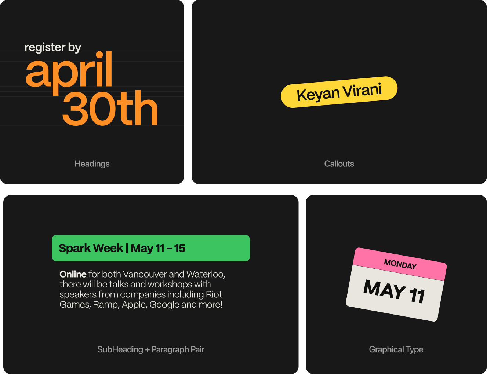

Designing and Organizing the First Across Canada Design Jam
From Jan - May 26' with Jaden Lee
SparkJam was a Design Jam I branded, organized, and ran between May 11 - 23, 2026 across both Vancouver and Waterloo for 400+ students.
When it came to developing the design direction for the event, we centered on the idea of an explosion of unfiltered, passionate, and inspiring creation.
We took that concept of creation and filtered it across three different layers; creating seperation, harmony, and reducing overwhelming visual noise.
Breakthrough Layer
Grid Barrier
Creation World
Nailing down the creation world was essential to working out the branding. We formed the foundation from old 3D modelling primatives, and then added various multidimensional materials on top.
Typography for SparkJam focused on being expressive and bold, while still being functional.

Thanks to the grid system that lays ontop of the creation world, creating fluid social media assets for the brand came naturally